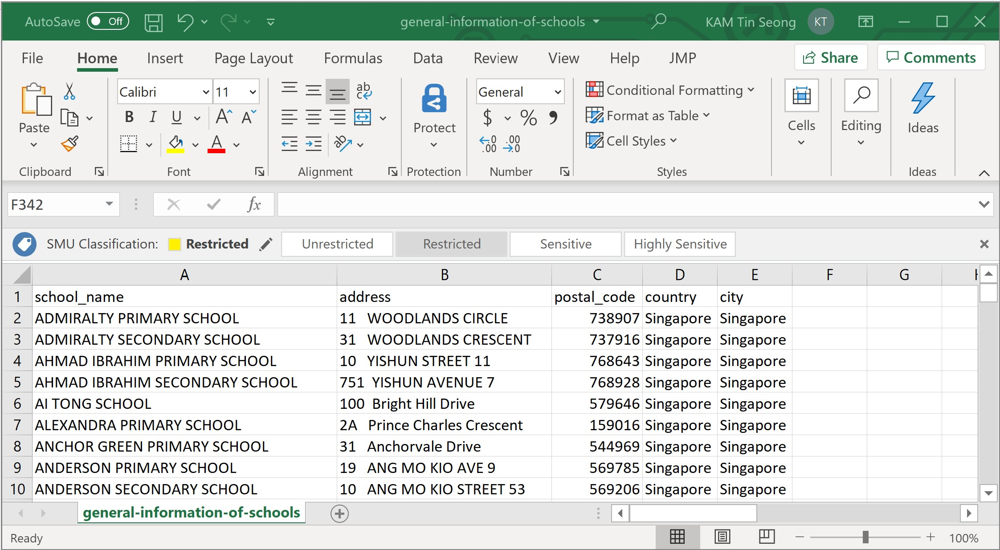

3 Working with GIS Data
A GIS is specially designed to manage geospatial data. This hands-on exercise consists of five sections. First, you will learn how to import geospatial data from different sources and file format into QGIS. At the same time, you will also learn how to check their feature type, coordinate system and other related information. You will also learn how to create a GIS data from an aspatial data by using QGIS. Next, you will learn how to transform this newly created GIS layer into Singapore National projected coordinates systems (i.e. SVY21). Lastly, you will also learn how to use the geocoding function of QGIS to create geospatially referenced data from a non-spatial data.
3.1 Learning Outcome
By the end of this session, you will be able to:
- work with geospatial data from data.gov.sg
- create geospatially-enabled data
- create GIS Layer from a text data with georeference information
- transform a GIS data onto a different projection system
- work with raster GIS data • work with internet geospatial services • work with geospatial database
3.2 Working with Geospatial Data from data.gov.sg
In this section, you will learn how to download geospatial data from data.gov.sg and import them into QGIS.
3.2.1 Downloading geospatial data from data.gov.sg
First, you are required to download the following geospatial and aspatial data from data.gov.sg:
- Master Plan 2014 Subzone Boundary (No Sea),
- Child Care Services,
- Street and Places, and
- School Directory and Information
3.2.2 Managing the imported data
For any GIS project, it is important for us to practice good document management. Assuming that the root directory of this project is called Hands-on_Ex02,
- created a sub-folder call
data.gov.
- inside
data.gov, create two new sub-folders. Call themgeospatialandaspatialrespectively. - place the downloaded Master Plan 2014 Subzone Boundary (No Sea), Child Care Services and Street and Places into the geospatial folder.
- unzipped their respective zipped files,
- extract the unzipped files, and
- place them in
geospatialfolder.
- place the downloaded School Directory and Information zipped file into aspatial sub-folder.
- unzipped the file,
- copy and paste
general-information-of-schools.csvintoaspatialsub-folder.
The geospatial folder should look similar to the screenshot below.

Notice that besides the geospatial data files, I also include the metadata of the data into the folder. This is because the metadata provide useful information of the data and it is important for us to keep them for future references.
3.2.3 Examining the geospatial data
Before you add the GIS data into QGIS, you should spend some time to examine the files in geospatial folder.
Notice that the shapefile version of MP14_SUBZONE_NO_SEA_PL and StreetsandPlaces data sets are actually made up of multiples files that have the same names but with different extensions.
Table below details the meaning of each file.  Source: https://en.wikipedia.org/wiki/Shapefile
Source: https://en.wikipedia.org/wiki/Shapefile
Next, you should also check the projection of the shapefile.
- Right-click on the PRJ file of
MP14_SUBZONE_NO_SEA_PL - Select Open with -> NotePad.
Your NotePad should look similar to the figure below.

From the screenshot, it is clear that MP14_SUBZONE_NO_SEA_PL is in svy21 projected coordinate system.
- Close the NotePad.
Different from shapefile, the geojson and kml files are editing in xml format. You can examine the content of these two files by using either Notepad or WordPad.
3.2.4 Adding geospatial data from data.gov into QGIS
Now, we are ready to bring the geospatial data downloaded from data.giv.sg into QGIS.
- From Window Desktop, launch QGIS.
You will start a new QGIS project.
- From the menu bar, select Project -> New.
Next, you are going to learn how to bring geospatial data sets into QGIS via the Browser panel.
- From the Browser panel, navigate to the path of Hands-on_Ex02.govas shown in the screenshot below.
- Double-click on
child-care-services-geojson.geojson.
Notice that child-care-services-geojson.geojson is added in the Layer panel and display on the View window as shown below.
DIY: Using the steps you had learned, bring in
MP14_SUBZONE_NO_SEA_PL.shpandStreetsandPlaces.shpinto QGIS.
Your screen should look similar to the figure below.
Notice that child-care-services-geojson layers does not appear on Map View. This is because it is covered by MP14_SUBZONE_NO_SEA_PL layer.
- From the Layer panel, click on
MP14_SUBZONE_NO_SEA_PLlayer. - Hold down the left mouse button, drag and place it below
child-care-services-geojson.
Now you should see all the active layers appear on the View window as shown below.
QGIS Tip: In order to avoid point and line feature layers being blocked away by polygon feature layer, it is always advisible to place the polygon feature layer at the botton of the layer order.
It is time to save the project.
- From the menu bar, click Project -> Save (Alternatively, from the icon bar, click on Save Project icon).
- At the Choose a QGIS project file dialog window, navigate to the root project folder, then provide a proper project name such as
Hands-on_Ex02, remember to select QGIS files (.qgs)* from the Save as type: dropdown list.
Your screen should look similar to the figure below.

- click on Save button.
Notice that the upper left corner of the top banner is labelled Hands-on_Ex02 instead of untitled now.
3.3 Working with Projection
In this section, you will learn how to:
- assign appropriate coordinate system to the QGIS project.
- how to transform a GIS data set from one coordinate system to another coordinate system.
3.3.1 Assigning project coordinate system
If you refer to the lower left corner of the active QGIS project window, there is a high chance that the EPSG is not in 3414 which is the EPSG code of svy21.
If there is the case, you can use the step below to assign the correct projection system for your QGIS project.

- At the lower right corner of QGIS project banner, click on the list of Render.
Project Properties dialog window appears.

- From Predefined Coordinate Reference Systems, click on EPSG:3414 from the list.
- Click on Apply button to make the change.
- Click on OK button to close the window.
Notice that the projection has been updated to EPSG:3414 now.

Option:
If this is the first time you use the Projection Properties, there is a high chance that the Predefined Coordinate Reference Systems is empty.
In this case,
- at Filter, type 3414. This will help to narrow down the search.
Before you move on to the next section, you should save the latest changes on the project file.
- From the icon bar, click on the Save Project icon.
3.3.2 Transforming coordinate system
In a GIS project, it is always a good practice to keep the geospatial data set(s) in a same projected coordinate system, using the national projected coordinate system such as svy21 of Singapore.
In this section, you will learn how to transform a geospatial data set from WGS84 Geographic Coordinate System to SVY21 Projected Coordinates System. You will also learn how to save the output into a new shapefile for permanent storage purpose. For the purpose of this exercise, child-care-services-geojson layer will be used.
First, let us verify if an appropriate projection system was used.
- From the Layers panel, right-click on
child-care-services-geojsonlayer. - Select Properties.
The Layer Properties dialog window of child-care-services-geojson layer appears.
- Click on Source.
Notice that child-care-services-geojson layer is in WGS geographic coordinates system and not in SVY21 projected coordinates system.
- Click on OK button to close the dialog window.
Next, we are going export the child-care-services-geojson layer into a new shapefile and at the same time transform the newly created shapefile into svy21 projected coordinates systems.
- From the Layers panel, right-click on
child-care-services-geojsonlayer. - Select Export -> Save Features As from the context menu.
The Save Vector Layer dialog window appears.
- For Format:, select ESRI Shapefile from the drop-down list.
- For Save as, click on the Browse button.
The Save Layer As dialog window appear.
- Navigate to
\SMT201\Hands-On02\data\data.gov\geospatial\sub-folder. - For File Name, type
ChildcareServices.
- Click on the Save button.
You will return to Save Vector Layer as dialog window.
Now, you are going to select the appropriate projected coordinate system.
- For CRS, click on the Browse button.
The Coordinate Reference System Selector dialog window appears.
- Click on SVY21/Singapore TM.
- Click on OK to update the selection.

Notice that the CRS is EPSG:3414 - SVY21 / SINGAPORE TM now.
Keep the rest of the default option check and you are ready to convert the geospatial data set into ESRI shapefile format and at the same time transform it into SVY21 projected coordinate system.
- Click on the OK button.
Notice that a new geospatial layer called ChildcareServices has been added on Layers panel and was plotted on the View window.
DIY: Using the steps you had learned in earlier section, check the properties of of this newly created
ChildcareServices
You screen should look similar to the screensht above.
Notice that ChildcareServices layer is in ESRI Shapefile format and its Coordinate Reference System in SVY21 / SINGAPORE TM.
- Click on OK button to close the dialog window.
DIY: You can also remove
child-care-services-geojsonlayer from Layers dialog window.
3.4 Creating Geospatially-Enabled Data
By and large, business data such as polyclinics, schools and business establishments do not capture geospatial information such as x- and y- coordinates explicitly. However, it is possible to create geospatially-enabled data from them by using the geocoding technique.
Geocoding is the process of finding associated geographic coordinates (often expressed as latitude and longitude) from other geographic data, such as street addresses, zip codes or postal codes (http://en.wikipedia.org/wiki/Geocoding).
3.4.1 Data Preparation
In this section, you will learn how to create geospatially enable data by using general-information-of-schools.csv you downloaded from data.gov.sg.
Note: In this section, we assume that general-information-of-schools.csv is stored in \Hands-on_Ex02\data\data.gov\aspatial\ sub-folder and you have Microsoft Excel installed in your computer.
Let us review the content of general-information-of-schools.csv file.
- At File Explorer, navigate to the sub-folder where
general-information-of-schools.csvis stored. - Right-click on
general-information-of-schools.csvfile. - From the context menu, select Open with -> Excel.
Your screen should look similar to the figure below.

Notice that general-information-of-schools.csv file consists of 31 fields. However, we only need to retain school_name, address and postal_code field.
- Use appropriate Excel function to delete the unwanted fields.
Next, we will create two create two new fields. They are: country and city.
- Use appropriate Excel function to create two new fields. Call them
countryandcity. - Fill in the cell below
countryandcityfields withSingapore.
The final general-information-of-schools.csv should look similar to the screenshot below.

- Use the Save as function of Excel to save the tidied csv file into Hands-on_Ex02.govsub-folder. Name the output file
schools.csv.
Note: It is important to ensure that the output file is in csv file format.
3.4.2 Install the MMQGIS Plugin
Instead of using the geocoding API of SLA OneMap, in this section you will use the Geocode Tools of MMQGIS plugin developed by Michael Minn.
To install the MMQGIS plugin, you will need to load the QGIS plugin repository by following the steps below.
- From the menu bar, select Plugins –> Manage and Install Plugins.
Plugins dialog window appears as shown below.

Notice that there is a long list of plugins available. We can use the Search function to locate mmqgis plugin easily.
- At Search, type mmqgis.
Your screen should look similar to the figure below.

Friendly Advice: It is a good practice to read the documentation of the plugin (i.e. More info: homepage) thoroughly before download or/and using any QGIS plugin.
- Click on Install Plugin button to run the installer.
After installing mmqgis plugin, remember to close the Plugin dialog window.
- Click on Close button.
3.4.3 Geocoding using MMQGIS Plugin
Now, you are ready geocode schools dataset.
- From the menu bar, select MMQGIS -> Geocode -> Geocode CSV with Web Service.
Web Service Geocode dialog window appears.
Geocode Tools of MMQGIS plugin imports addresses from a CSV file. The input CSV file should be encoded in the UTF-8 character set. Although other 8-bit encodings (like Windoze ISO-8859-x) will work if only ASCII characters are present, non-ASCII characters may cause unpredictable behavior.
- From Input CSV File (UTF-8), click on Browse button.
Select a file dialog window appears.
- Navigate to the path where
schools.csvreside. - Click on
schools.csv. - Click on Open button.
Your screen should similar to the screenshot below.
Notice that the Address, City and Country drop-down lists have been mapped to the corresponding field names in schools.csv. This explains why the data preparation performed in previous step was important and necessary.
MMQGIS Geocode Tool supports five geocoding services. They are: Google, OpenStreetMap/Nomination, US Census Bureau, ESRI Server and NetToolKit. Except OpenStreetMap/Nomination, the rest of the geocoding services required you to have an API key.
In this exercise, OpenStreetmap/Nominatim geocoding service will be used.
Warning: To complete this section, you will need internet access to run the geocoding process.
- For Web Service, select OpenStreetMap/Nominatim from the drop-down list.
Geocode Tool will generate two output files. They are a point feature GIS data set along with a Not Found CSV file containing all rows that could not be geocoded (for whatever reason). We need to tell Geocode Tool where to keep these two output files.
- Use File Explorer to create a new sub-folder called geocoding in -on_Ex02 directory.
- For Output File Name, click on Browse button.
Create or select a file dialog window appears.
- Navigate to the newly create geocoding sub-folder.
- For File name, type
geocoded_sch.shp. - Click on Save button.
You also need to provide the Not Found List Output list a place holder.
- For Not Found Output list, click on Browse button.
Create or select a file dialog window appears.
- Navigate to the newly create geocoding sub-folder.
- For File name, type
not_found_sch.csv. - Click on Save button.
The completed dialog window should look similar to the screenshot below.
Now, you are ready to perform the geocoding function.
• At the Web Service Geocode dialog window, click on Apply button.
When the geocoding function is completed, notice that a new shapefile layer will be added on QGIS map window. At the same time, the progress bar will indicate numbers of records that have been geocoded successfully as shown below.

The output report shows that out of the 346 schools data records, 325 of them have been geocoded successfully.
- click on Close button to closed the dialog window.
Let us examine the layer properties of the newly created geocoded_sch layer.
- Hover your mouse over geocoded_sch layer, right-click and select Open Attribute Table from the context menu.
The Attribute table of geocoded_sch appears.
Notice that all columns from the input CSV file are added as attributes in the output shapefile. Six additional fields are added to in the shapefile. The category and type fields are internal from OpenStreetMap. They provide useful data classification for the schools data sets.
DIY: Using the steps your had learned in previous section, examine and transform the coordinate system of
geocoded_schdata set into SVY21 projected coordinate system.
3.5 Working with Raster GIS data
Raster data such as those collected by remote sensing satellite or airplanes are one of the important data sources of a GIS project. By and large, these data are stored in image file format such as TIF, GeoTIF, JPG and GeoJPG. In this section, you will learn how to bring a raster data in GeoTIF file format into QGIS. The raster data is called Chinatown.tif. It is available in -on_Ex02sub-folder.
- Start File Explorer.
- Navigate to -on_Ex02sub-folder.
You should see the following files in the sub-folders.
This is an example of images file in GeoTIF format. The geographical information of the image file (i.e. Chinatown.TIF) is actually contained in the Chinatown.XML file.
- Open
Chinatown.XMLusing Notepad.
It should look similar to the figure below.
It provides details information of the image file including georeference system used, the geographical extent of the data, spectral resolution of the dataset and spatial resolution of the dataset.
Next, you will important Chinatown raster data into QGIS.
- From Browser panel, navigate to sub-folder as shown in the screenshot below.
- Double-click on
Chinatown.tif.
Notice that a new raster layer called Chinatown has been added on the Layers panel. However, it is not visible on the View window. This is because it is block by the massive point features.
In order to view the newly added Chinatown layer, we need to zoom into the extend of Chinatown layer.
DIY: Using the steps you had learned in Hands-on Exercise 1, zoom to the extend of
Chinatownlayer.
Your screen should look similar to the screenshot below.
DIY: Using the steps you had learn in the earlier sections of this hands-on exercise, examine the properties of
Chinatowndata layer.
3.6 Working with Internet Geospatial Services
One of the unique feathers of a modern GIS is its capability of consuming GIS data shared over the internet. These data can be in the form of WMS, WMS or proprietary format such as Google map, Bing map and OpenStreetMap format. In this section, you will learn how to consume an OpenStreetMap (OSM) data using QGIS.
DIY: Before we can use OSM service, let us display the map view by using the full extent of MP14_SUBZONE_NO_SEA_PL layer. This is because we will use the extend of MP14_SUBZONE_NO_SEA_PL as the reference to map OSM service in QGIS.
- From Browser panel, click on the triangle in front of XYZ Tiles.
OpenStreetMap icon appears as shown in the screenshot below.
- Double-click on OpenStreetMap icon.
Your screen should look similar to the figure below.
DIY: Use the skills you had learned from previous sections, 1. Re-organise the GIS layers so that you can see the polyclinics, and childcare centres are plotted on top of OpenStreetMap layer. 2. Navigate around the map areas and look for details.